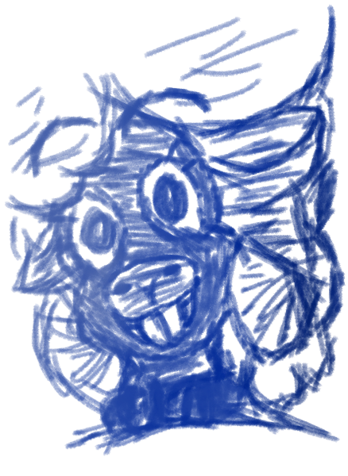

Welcome to Bo's Diary

Dear Diary,
This shall be the first entry of my third journal, which I bought from Otis Dammer just this morning, and it is the most official looking one I have owned so far. I like the preprinted entry spaces and drawing margins. It will make things a lot more organized in the future, especially compared to my past journals.
Asides from the purchase of this journal, today was rather mundane. I helped Auntie Woolie replant some of the wheat that got ruined from the rainstorm over the week's end. I hate the mudslides and the flooding, but I can't complain when the air smells so fresh the days after.
May my home be forever be blessed with petrichor.
Afterward I finished up cleaning the porch on the homestead for Uncle Sonny and we had mushroom stew with mashed potatoes for supper. No dessert today, but Auntie Woolie has something special planned for tomorrow. I can't wait!
That's all. Here's to tomorrow!
